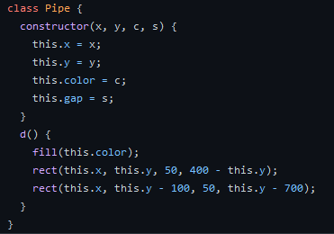

Falppy Bird
This projects is a small, simple, flappy bird clone. It is pretty bare-bones, in that there are no fancy graphics, but the gameplay is what is to be expected from a flappy bird remake. Here, I'll be documenting the process, as well as some programming wisdom. For this project, I am using p5.js. p5 is a javascript library built off of processing, which makes using graphics really easy in code. Although processing was built on Java syntax, p5 is built on javasscript, a language I am far less familliar with. As such, there was a lot of guesswork and trial and error to come up with the eventual end product.
For this project, I was not starting from scratch. I had previously made a flappy bird clone called "Falppy Bird" as a culminating project for a highschool course. If you're interested, you can click here to see that original project. So this project was mostly just converting the old Falppy Bird code into a more modern, web-portable format. In the process, some of the quirks, love, and strange features of Flappy Bird were lost, but that is why the original is still around on my github page.
The first part of the project is to create the necessary shapes to represent the player and the pipes. The player is one gray circle, and the pipes are a set of two rectangles with a gap in the middle, and they are colored a random shade of green. Unlike the old Falppy Bird, this game has no customization or menu options. These would be possible, but I did not implement them. Next is to create the required Pipe class. Anyone familiar with object oriented programming would know why, but to someome who doesn't know, classes are used to keep data in groups together. There is no player class, because the player is simple enough to be represented as a circle and nothing more.
